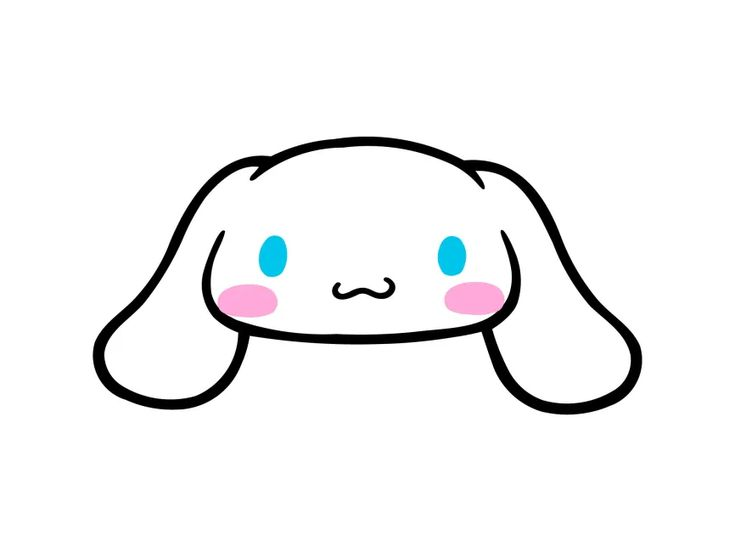

Cinnamoroll says:
“This message is really important 🩵”
I’ve been wanting to say this for a while na, and I figured the best way to do this is just this.
I really, really adore you. There’s something about you that quietly stands out in the most beautiful way.
Your eyes are literally super super duper so pretty, they have this thing na where it instantly makes everything feel
lighter when I see them. Not to even forget your smile??? It’s one of the cutest things I have ever seen, the kind that
stays in my head longer than it probably should.
ALSO I LOVEEE how your glasses fit you so perfectly. They don’t just suit you yk, they feel like you.
SAKA yung mga outfits on your ig posts? The tita vibes are so, so adorable.
There’s just really something so charming about you. It makes you even more attractive, more cute in a way na parang
ang hirap iexplain but impossible not to notice.
I made this not expecting anything. I just wanted you to know that someone sees you, admires you, and appreciates all
these little details that make you you. You genuinely make my life better just by being yourself.
“Thank you for being you ☁️💗”